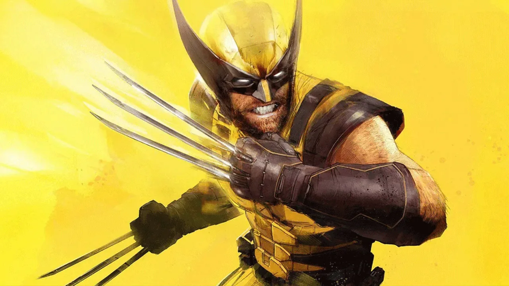

Todo sobre el nuevo juego de Insomniac
Marvel: Lobezno

Después de un debut estelar con Spider-Man y una secuela que contra todo pronóstico consiguió expandir todavía más aquella idea, Insomniac Games cambia de superhéroe titular y cuelga las telarañas para abrazar su lado más salvaje. James Howlett entra con fuerza en PlayStation 5, con un juego que exhibe muchas de las lecciones aprendidas de nuestro querido amigo y vecino, pero se arriesga a contar una historia más profunda y mucho, mucho más sangrienta.

Todo empieza cuando Logan regresa al Equipo X, donde vuelve a colaborar con Essex, que actúa como capitán del equipo, y con sus excompañeros: Walter, Dientes de Sable y Mística. En esa ecuación aparece Jean Grey, con un grupo de mutantes que necesita asilo, y la historia se ramifica a partir del encuentro entre Logan y la propia Grey. Si conoces la historia de Lobezno y Jean Grey en los cómics, ya te puedes imaginar por dónde van los tiros. En este juego Insomniac explora a Lobezno de una anera bastante interesante, y no titubea al mostrar a un Logan asustado. No de La Mano, o de los acechadores, sino de los espacios en blanco de su propio pasado. A lo largo de la historia iremos despejando poco a poco esas incógnitas, hasta llegar a una gran revelación final.

Insomniac llevaba dos juegos apostando por el formato de mundo abierto, pero ahora, a pesar de que Logan viaja a diferentes países, su aventura está mucho más contenida. El estudio apuesta por una distribución de niveles más clásica, con mapas (rejugables por cierto) más “pasilleros” en los que avanzamos en línea recta hasta el siguiente objetivo. Hay fases en las que el concepto se abre un poco más, como pasaba con Seattle en The Last of Us: Parte 2, pero no es lo habitual..
El contenido secundario de Lobezno se encapsula prácticamente todo en las puertas de pesadilla. En muchos de los niveles nos encontraremos con una misteriosa puerta que nos lleva de vuelta a una versión… onírica, de la cabaña de Logan. Dentro, nos espera un pequeño desafío de combate, una prueba contrarreloj o un modo de oleadas que parte con un planteamiento roguelite.El más interesante es este último, donde irán apareciendo oleadas de enemigos y podremos ir desbloqueando diferentes ventajas para Logan. La prueba puede superarse en cuestión de un minuto, pero si quieres optar a la medalla de oro (y a su recompensa) te va a tocar sudar, porque la dificultad en de combate en este modo es bastante pronunciada. Si superas estas pruebas desbloquearás un recuerdo del pasado de Logan, y al reunirlos todos, podrás ver una cinemática bastante importante para la trama global del juego.